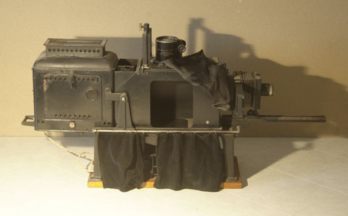

Lanterna di proiezione
Scuola di provenienza: Istituto agrario "F. De Sanctis", Avellino
Settore: Ottica
Costruttori: La filotecnica ing. Salmoiraghi & Co., Milano, Italia
Materiali: Lamiera metallica, legno di mogano, vetro, velluto
Accessori: Nessuno
Stato di conservazione: Buono, la lente convergente è lesionata
Descrizione: È un antico proiettore di corpi trasparenti (per proiezioni a grandi distanze) e di corpi opachi. In robusta lamiera di ferro verniciato nero, poggiato su sostegno in legno. Si può inclinare in modo che il fascio luminoso colpisca direttamente il corpo opaco posto nella parte inferiore. La lampada (funzionante a corrente alternata e continua di 30 ampere) a incandescenza regolabile a mano da 160 volt e 1000 W di potenza è spostabile all’interno, orizzontalmente,per circa 7 cm, ed uno specchio parabolico concentra la luce in due lenti (condensatori) una piano-convergente (diam. 14,5 cm) e una bi convergente (20 cm). Queste due sono facilmente e separatamente smontabili; il loro diametro utile coincide con il diametro massimo dell’oggetto da proiettare e deve essere almeno di 12 cm. È fornito di due obiettivi: “SPICA” serie 7 No 7 F 4,5 F = 310 m/ù ; “POLLUX” F 150 m/m. Può funzionare anche con una lampada ad arco. Il soffietto è in tela doppia allungabile. Il portaobiettivo è spostabile a mezzo di movimento elicoidale. Chassis doppio porta diapositive nelle dimensioni di cm 8,5x10. La dimensione massima del corpo opaco proiettabile è di cm 16x16. Specchio inclinabile, argentato anteriormente, per riflettere i raggi sullo schermo. Cassa custodia. Non si dispone di altre utili notizie in quanto, a causa dell’ultimo evento bellico sono andati distrutti gli archivi della Filo-tecnica Salmoiraghi.